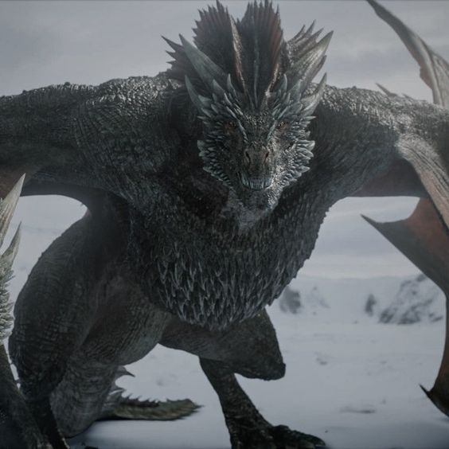
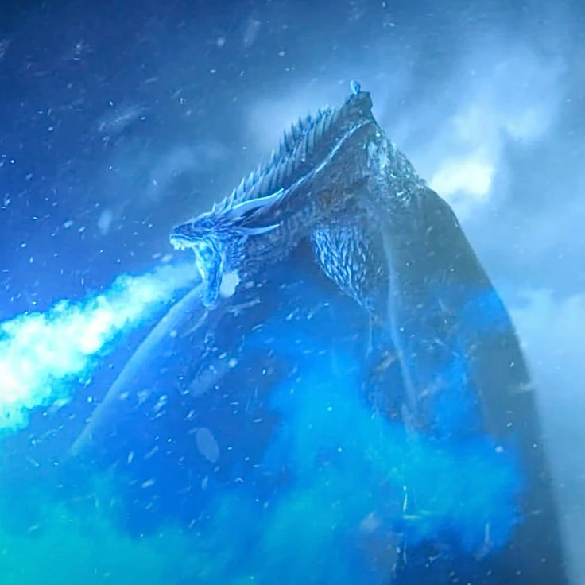
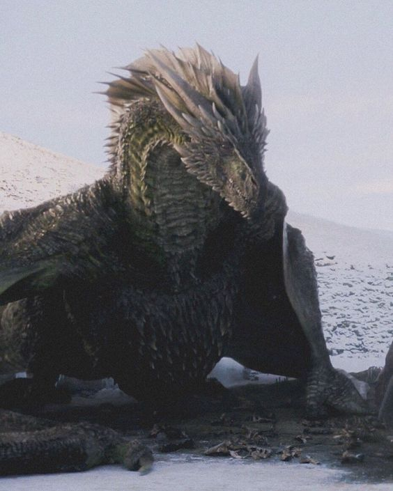
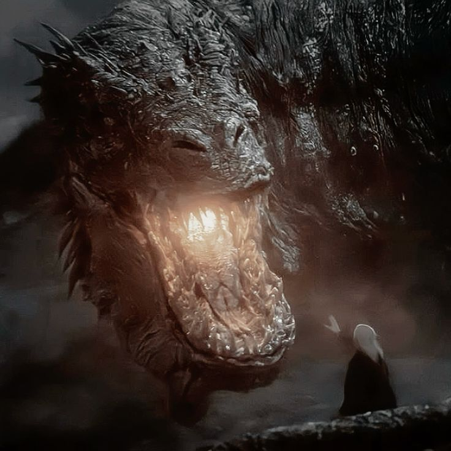
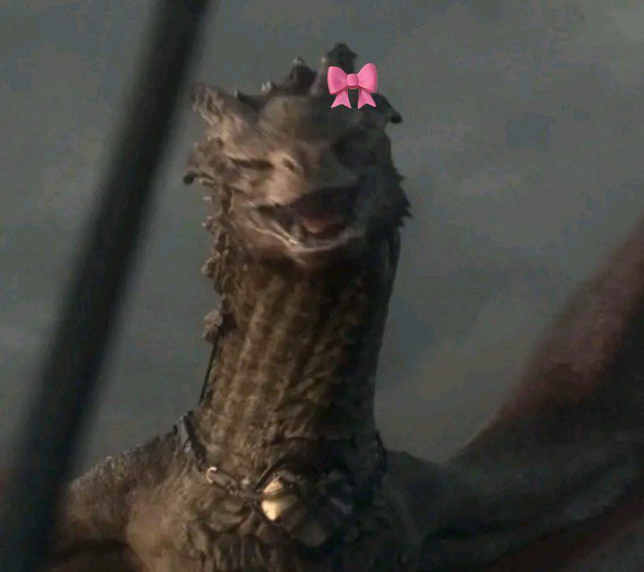

Os dragões das mulheres targaryens
DROGON
Drogon é um dos dragões nascidos no Mar Dothraki de Daenerys Targaryen. Ele foi batizado com este nome em homenagem ao marido morto de Daenerys, Drogo.
VISERION
Viserion é um dos dragões nascidos no Mar Dothraki, junto com Drogon e Rhaegal. Ele foi nomeado em homenagem ao irmão dela, Viserys Targaryen.
RHAEGAL
Rhaegal é um dos dragões nascidos no Mar Dothraki, junto com Drogon e Viserion. Ele tem esse nome em homenagem ao irmão dela, Rhaegar Targaryen.
VHAGAR
Vhagar foi uma dragão-fêmea montada por Visenya durante a Conquista, ao lado do Balerion de Aegon o Conquistador e o Meraxes de sua irmã Rhaenys.
SYRAX
Syrax foi uma dragão-fêmea. Ela foi montada exclusivamente por Rhaenyra Targaryen. Seu nome veio de uma deusa de Valíria.